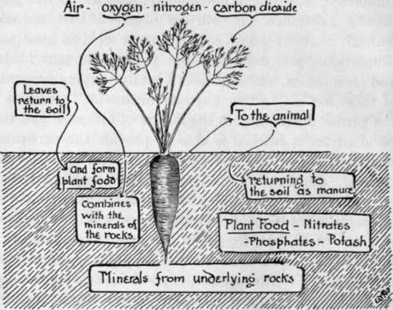
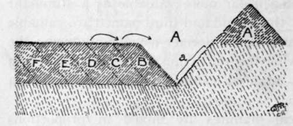

Artificial Manures
Description
This section is from the book "School Gardening", by W. Francis Rankine. Also available from Amazon: School Gardening.
Artificial Manures
The question of artificial manures is of great interest and illustrates how completely scientific knowledge is brought to the gardener's assistance. It will be observed that natural manure contains plant food in more or less constant proportions, yet, different crops require different foods, and then, again, different soils contain varying amounts of these foods. In this way, by means of "artificials," the gardener who studies the nature of his crops and the peculiarities of his soil is able to provide the particular food that is needed, and also in whatever quantity he pleases. For instance, it has already been stated that nitrogen is an essential plant food ; it is known that the atmosphere contains an enormous supply of this element in a free state, yet, except in the case of one family of plants-Peas and Beans-this air supply is quite inaccessible to plants. The legumes, or pod-bearers, are provided with nitrogen nodules on their roots ; these nodules contain minute organisms that are able to store up nitrogen for the plant's use. Such nodules are to be found on the roots of Feas, Beans, Lupins or Clover, and they are extremely interesting instances of the action of plants in obtaining food.
The nitrogen of the air is thus unobtainable by the majority of plants ; nitrogen, therefore, must be obtained from the soil, in which it is present in the form of nitrates.
A nitrate, of which sodium nitrate is a useful example, is really, as far as the plant is concerned, a nitrogen carrier. In performing this work, sodium nitrate is a most useful artificial manure ; it is easily soluble and therefore available for plant food. It should be remembered that great care is necessary in the correct use of this manure ; it may be placed on the surface when seedlings are developing-soon after they have used up the storage of food contained in the parent seed, half an ounce per square yard being ample at this stage. It is helpful in the growing of all crops at the rate of one ounce to the square yard, or a similar quantity to a gallon of water when utilised in liquid form. In no circumstances must it be used on land deficient in potash and phosphates.
Fig. 11. The Relation Of The Plant To The Soil.
Phosphoric acid is carried to the plant's root system in the form of superphosphates, bone dust, and guano. These compounds are extremely useful, and the garden plots should be dressed with it in early spring, for they are not so readily soluble as sodium nitrate. The dressings may be scattered into the trenches as digging proceeds, or distributed on the land and raked or hoed in to a depth of two or three inches. Of the first and second named, from three to four ounces to the square yard may be given ; of the third named, two ounces.
Potash is carried to the plant in the form of nitrate of potash, sulphate of potash, muriate of potash, and kainit ; it is an indispensable food supply. It is easily retained in the soil and not so easily washed out and lost as is the case with sodium nitrate.
The first named is far more valuable as a stimulant than as a food ; the second and third named are valuable for spring application, the former usually producing the better results; while the fourth must be applied in autumn when it has substantial value as a fungicide and an insecticide as well as a food.
These chemical manures are mixed in proportions varying according to the crop and also to the amount of lime in the soil. The presence of lime is an important consideration because it helps to a great extent in the proper production of a food supply. Here are tables of mixtures suitable for land rich in lime and also for soils deficient in that substance.
A. | For Soils | Rich in Lime :- | |
Phosphates | Superphosphate of Lime | 4 lbs. | |
Potash | Kainit | 2½ lbs. | |
Nitrogen | Nitrate of Soda . | l½ lbs. | |
8 lbs. for 1 rod of land | |||
B. | For Soils | Deficient in Lime : | |
Potash | Sulphate of Potash | ¾lb. | |
Nitrogen | Nitrate of Soda . | ¾ lb. | |
Phosphates | Basic Slag . | 2½ lbs. | |
4 lbs. for 1 rod of land |
It is of the utmost importance that the soil should possess a fine tilth, otherwise the distribution of these artificial manures is not even-their action is local, and it is hindered greatly by lumpy soils.
Lime is of great value on account of its action in producing free ammonia when it comes in contact with nitrogenous matter. In this way it helps the decay of stable manure, but it is imperative that it should be raked into the soil after the natural manure is dug in.
Otherwise, if it is mixed with stable manure before it is used, ammonia is liberated and evaporates, the nitrogen of the manure being thereby lost. Lime also sweetens the soil and performs a useful work in killing many forms of pests.
Fig. 12. applying artificials.
A trench is opened at A and the soil thrown to , A' ; the manure is then dusted on the sloping surface (a) of the trench. Section B is thrown forward and the treatment continued.
When natural manures are exclusively relied upon to maintain the supply of food in the soil, a heavy dressing of lime must be applied in the autumn or winter at intervals of six years. It will act upon the masses of humus, free the nitrogen contained therein, and restore the ground to a state of fertility.
In general, artificial manures should be applied early in the year, and in many cases a second dressing may be made during the season. Full directions as to these applications will be made in reference to each crop that needs, or benefits by, concentrated foods.
Continue to: